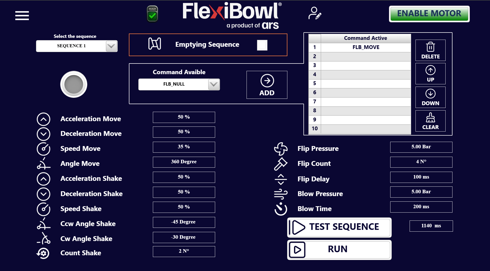

Comparativa Software#
Questa pagina confronta le principali differenze software tra FlexiBowl® 2.0 e FlexiBowl® 3.0, con l’obiettivo di guidare l’utente nella comprensione delle nuove funzionalità e dei cambiamenti operativi introdotti dalla nuova generazione.
1. Protocolli di comunicazione disponibili#
Protocollo |
FlexiBowl® 2.0 |
FlexiBowl® 3.0 |
|---|---|---|
TCP/IP – UDP |
✅ |
✅ (TCP Server) |
EtherNet/IP |
✅ |
✅ |
Profinet |
❌ |
✅ |
Modbus |
❌ |
✅ |
Digital I/O |
✅ |
✅ (opzionale) |
FlexiBowl® 2.0 supporta TCP/IP (UDP, porta 7776 TCP / 7775 UDP), EtherNet/IP e Digital I/O. I comandi vengono inviati come stringhe ASCII con header Chr(0)Chr(7) e footer Chr(13).
FlexiBowl® 3.0 introduce due nuovi protocolli — Profinet e Modbus — e adotta un modello di comunicazione basato su ControlWord numeriche e variabili di Input/Output (EXE / WRITE / READ). Il TCP Server utilizza stringhe in formato NomeVariabile[Valore]%. La modalità Digital I/O rimane disponibile come opzione acquistabile separatamente.
2. Interfaccia utente: com’è fatta e come si accede#
FlexiBowl® 2.0 — Software FlexiBowl® Parameters#
L’interfaccia del FlexiBowl® 2.0 è un’applicazione desktop chiamata FlexiBowl® Parameters, da installare sul PC di controllo.
Installazione e accesso:
Installare il programma FlexiBowl® Parameters sul PC (fornito da ARS o scaricabile dal portale).
Collegare il PC al FlexiBowl® tramite cavo Ethernet (LAN diretta o via switch).
Avviare il programma e inserire l’indirizzo IP del FlexiBowl® per connettersi.
Struttura dell’interfaccia:
Il menu laterale presenta cinque voci principali:
Voce |
Descrizione |
|---|---|
1 – Main Commands |
Finestra principale per la configurazione e il test di Move e Shake |
2 – Try Commands |
Crea e testa sequenze combinate di comandi |
3 – Monitor |
Monitora lo stato I/O, il driver e gli allarmi |
4 – Console |
Invia comandi stringa direttamente al driver |
5 – Reset Option |
Ripristina i parametri ai valori di fabbrica e gestisce lo svuotamento manuale |
Dalla schermata Main Commands sono direttamente accessibili i pannelli Move, Shake e Option tramite tab nella parte superiore.
FlexiBowl® 3.0 — Interfaccia web browser-based#
L’interfaccia del FlexiBowl® 3.0 è completamente web-based: non richiede alcuna installazione. È sufficiente un browser moderno.
Accesso:
Collegare il PC al FlexiBowl® tramite Ethernet.
Aprire il browser e digitare nella barra degli indirizzi l’indirizzo IP del FlexiBowl®.
Si apre la Home page dell’interfaccia.
Note
Se il sistema in uso è FlexiVision One, la configurazione viene gestita dalla sua interfaccia dedicata. Non è necessario utilizzare l’interfaccia software FlexiBowl® descritta in questa sezione.
Struttura dell’interfaccia:
Il menu laterale del FlexiBowl® 3.0 include pagine dedicate a ogni funzione operativa (Main Command, Jog Motor, Setup, Monitor, ecc.), accessibili direttamente dal browser.
3. Come cambiare l’indirizzo IP#
FlexiBowl® 2.0#
Aprire il programma FlexiBowl® Parameters.
Nella schermata di connessione, selezionare Change IP Address.
Inserire il nuovo indirizzo IP desiderato e confermare.
In caso di IP sconosciuto o irraggiungibile, è possibile recuperarlo tramite la procedura di IP Address Recovery descritta nel manuale (sezione 6.2.3), che prevede l’uso del pulsante fisico sul pannello di controllo.
FlexiBowl® 3.0#
Aprire il browser e accedere all’interfaccia tramite l’IP corrente.
Dal menu laterale, aprire la pagina Setup.
Cliccare su Get IP per leggere i parametri di rete correnti.
Inserire il nuovo indirizzo IP nei campi dedicati e cliccare Set IP.
Cliccare Apply per confermare, poi Reboot per rendere effettive le modifiche.
Important
Dopo il reboot, riconnettersi al FlexiBowl® utilizzando il nuovo indirizzo IP impostato.
4. Come gestire i movimenti#
FlexiBowl® 2.0#
I movimenti vengono configurati e testati direttamente dall’interfaccia Main Commands, che espone tre pannelli:
Move: imposta Acceleration, Deceleration, Speed e Angle tramite slider o campo numerico. Il pulsante Test Move esegue il movimento con i valori impostati.
Shake: espone i parametri CCW Angle, CW Angle, Count, Acceleration, Deceleration e Speed. Il pulsante Test Shake esegue lo shake.
Try Commands (sezione 6.2.5): permette di combinare più comandi in una sequenza con un numero configurabile di loop, selezionando i comandi dalla lista All Commands e aggiungendoli alla lista Selected Commands.
Per eseguire movimenti in produzione tramite protocollo, si inviano comandi ASCII (es. QX2 per Move, QX6 per Shake) attraverso il canale TCP/UDP configurato.
FlexiBowl® 3.0#
I movimenti sono organizzati in sequenze (fino a 20), configurabili dalla pagina Main Command dell’interfaccia web. Ogni sequenza contiene una lista di comandi (fino a 10 slot), con i relativi parametri di Move, Shake, Flip e Blow.
Dalla pagina Main Command è possibile:
Selezionare la sequenza da configurare tramite il menu a tendina Select the sequence.
Impostare tutti i parametri (Acceleration/Deceleration/Speed Move, Angle Move, parametri Shake, Flip e Blow) direttamente nei campi numerici.
Aggiungere comandi alla lista tramite il selettore Command Available + pulsante ADD.
Riordinare i comandi con i pulsanti UP / DOWN, eliminarli con DELETE o svuotare la lista con CLEAR.
Testare la sequenza con TEST SEQUENCE o avviarla in produzione con RUN.
Per la modalità manuale continua, la pagina Jog Motor consente di avviare una rotazione continua con parametri di Speed (positivo = orario, negativo = antiorario), Acceleration e Deceleration, con possibilità di attivare contestualmente Flip e Blow.
Per eseguire movimenti in produzione tramite protocollo, si invia la ControlWord corrispondente (es. 10[0]% per eseguire la Sequenza 1 via TCP, oppure ControlWord 10 via EtherNet/IP o Profinet).
5. Come cambiare i parametri#
FlexiBowl® 2.0#
I parametri operativi (velocità, angoli, accelerazioni) vengono modificati in due modalità:
Interfaccia grafica: tramite gli slider o i campi numerici nelle schermate Move e Shake di Main Commands.
Via protocollo (runtime): usando comandi di lettura/scrittura come
RW(Write) eRL(Read) inviati tramite TCP/UDP. I valori da inviare al driver devono essere moltiplicati per il fattore di riduzione della macchina (ottenuto con il comandoRR114), poiché i parametri sono espressi in unità interne del driver.
FlexiBowl® 3.0#
I parametri vengono modificati in tre modalità:
Interfaccia web: direttamente nei campi numerici della pagina Main Command per ogni sequenza.
Via protocollo WRITE: usando le ControlWord del blocco WRITE (formula:
N × 100 + offset_parametro) per scrivere singoli parametri di una sequenza dall’esterno.Via protocollo READ: usando le ControlWord del blocco READ (formula:
10000 + N × 100 + offset_parametro) per leggere i valori correnti.
I valori sono espressi in unità fisiche dirette (%, gradi, ms, bar) senza fattori di conversione.
5.1 Esempio pratico: Move + Shake su FlexiBowl® 800#
Lo scenario è il seguente: eseguire un Move a 360°, poi uno Shake, poi un wait di 200 ms; accendere il backlight; impostare i parametri di movimento con acceleration/deceleration al 50%, speed al 35%, shake con angoli CW -30° e CCW -45°, count 2.
Con FlexiBowl® 2.0#
I parametri devono essere scalati tramite il fattore di riduzione della macchina. La sequenza di comandi da inviare via TCP/UDP è:
QX7 → Accendi backlight
RR114 → Leggi fattore di riduzione → variabile_riduzione
RL1 (50 × variabile_riduzione) → RW11 → Scrivi Acceleration Move = 50%
RL1 (50 × variabile_riduzione) → RW12 → Scrivi Deceleration Move = 50%
RL1 (35 × variabile_riduzione) → RW13 → Scrivi Speed Move = 35%
RL1 (360 × variabile_riduzione) → RW14 → Scrivi Angle Move = 360°
QX2 → Esegui Move
RL1 (50 × variabile_riduzione) → RW15 → Scrivi Acceleration Shake = 50%
RL1 (50 × variabile_riduzione) → RW16 → Scrivi Deceleration Shake = 50%
RL1 (50 × variabile_riduzione) → RW110 → Scrivi Speed Shake = 50%
RL1 (30 × variabile_riduzione) → RW18 → Scrivi Angle CW Shake = -30°
RL1 (30 × variabile_riduzione) → RW19 → Scrivi Angle CCW Shake = -45°
RL1 2 → RW17 → Scrivi Count Shake = 2
QX6 → Esegui Shake
Il wait di 200 ms è gestito dal sistema chiamante (robot o PLC), in attesa che il FlexiBowl® abbia completato il comando corrente prima di inviare il successivo.
Con FlexiBowl® 3.0#
I parametri si impostano direttamente dall’interfaccia web, senza conversioni. Dalla pagina Main Command:
Selezionare SEQUENCE 1 dal menu a tendina.
Impostare i campi:
Acceleration Move:
50 %Deceleration Move:
50 %Speed Move:
35 %Angle Move:
360 DegreeAcceleration Shake:
50 %Deceleration Shake:
50 %Speed Shake:
50 %Ccw Angle Shake:
-45 DegreeCw Angle Shake:
-30 DegreeCount Shake:
2 N°
Aggiungere alla lista dei comandi:
FLB_MOVE, poiFLB_SHAKE.Verificare che il Backlight sia abilitato dalla pagina Option (toggle Backlight 1).
Il wait di 200 ms si gestisce aggiungendo il comando
FLB_WAITalla lista con il valore opportuno, oppure lato sistema chiamante.
Per eseguire la sequenza via protocollo TCP, inviare:
10[0]% → Esegui Sequenza 1
Il sistema risponde con 10[0]% a conferma dell’avvenuta esecuzione. Non è necessario calcolare fattori di riduzione: tutti i valori sono in unità fisiche.
6. Come leggere gli allarmi#
FlexiBowl® 2.0#
Gli allarmi si consultano dalla sezione Monitor → Alarm Status del programma FlexiBowl® Parameters. La schermata mostra una lista di stati del driver con indicatori LED (verde = OK, rosso = errore). La schermata Driver Status mostra in tempo reale tutte le variabili operative (Motor Enabled, In Motion, Drive Fault, ecc.).
Per il reset di un allarme via protocollo, inviare:
Chr(0)Chr(7)QX12Chr(13) → Reset allarme e riabilitazione motore
FlexiBowl® 3.0#
Gli allarmi si consultano dalla pagina Monitor dell’interfaccia web, con tre tab: I/O Status, Driver Status e Alarm Status.
Via protocollo, il segnale di allarme è esposto dalla variabile di output In_Error (BOOL) e il codice dell’errore attivo è disponibile in ErrorCode (UDINT). Per leggere lo stato via TCP:
InError% → risposta: InError[1]% se c'è errore, InError[0]% se OK
ErrorCode% → risposta: ErrorCode[N]% con il codice dell'errore attivo
Per il reset dell’allarme:
Via protocollo TCP:
Reset%Via variabile digitale: fronte di salita sul segnale di input Reset (BOOL)
Warning
Prima di eseguire il reset, identificare e risolvere la causa dell’errore. Il sistema non eseguirà nuovi comandi di movimento finché è presente un errore attivo.
7. Modalità tracking (FlexiTrack)#
FlexiBowl® 2.0 — FlexiTrack (opzione)#
La modalità FlexiTrack è un’opzione acquistabile separatamente che consente di mantenere il FlexiBowl® in rotazione continua (jog) sincronizzando il segnale encoder con il robot di pick, per aumentare la produttività in applicazioni ad alta cadenza.
Hardware richiesto:
Connessione all’encoder interno tramite il connettore del pannello di controllo (segnale quadratura TTL, 4000 conteggi/giro sul motore; per FlexiBowl® 500/650/800 con riduzione 1:3 → 12000 conteggi/giro sul disco).
In alternativa, installazione di un encoder esterno (incremental, TTL RS422, ≥ 12000 ppr) sul perno solidale alla puleggia condotta.
Important
Con FlexiTrack, il controllo del movimento è possibile solo via protocollo Ethernet (TCP/UDP). Il protocollo Digital I/O non è supportato.
Comandi principali FlexiTrack (inviati via TCP/UDP):
Comando |
Descrizione |
|---|---|
|
Imposta accelerazione/decelerazione in giri/s² |
|
Imposta decelerazione (se diversa da JA, inviare dopo JA) |
|
Imposta velocità di rotazione in giri/s |
|
Imposta corrente diretta al motore |
|
Direzione oraria |
|
Direzione antioraria |
|
Avvia jog (rotazione continua) |
|
Ferma jog (con rampa JL) |
|
Attiva / disattiva Flip |
|
Attiva / disattiva Blow |
Parametri consigliati:
JA0.2 → accelerazione 0.2 giri/s²
JL0.2 → decelerazione 0.2 giri/s²
JS0.2 → velocità 0.2 giri/s
CC1.3 → corrente motore
DI1 → rotazione oraria
Flip e Blow, non gestibili con i comandi QX standard durante il jog, vanno implementati tramite un programma in background con ciclo iterativo che commuta lo stato delle valvole con i tempi e le iterazioni desiderati.
FlexiBowl® 3.0 — Jog Motor#
Nel FlexiBowl® 3.0, la modalità di rotazione continua è integrata nativamente nella pagina Jog Motor dell’interfaccia web, senza necessità di opzioni hardware aggiuntive.
Parametri di movimento Jog:
Parametro |
Unità |
Descrizione |
|---|---|---|
Acceleration |
% |
Rampa di accelerazione all’avvio |
Deceleration |
% |
Rampa di decelerazione all’arresto |
Speed |
% |
Velocità di rotazione. Valore positivo = orario; valore negativo = antiorario |
Funzioni accessorie durante il Jog:
Il jog gestisce direttamente Flip e Blow tramite toggle dedicati, senza necessità di programmi in background:
Flip Enable: abilita il flip automatico ciclico durante il jog, con parametri di Flip Duration, Flip Pression e Flip Pause configurabili direttamente nell’interfaccia.
Blow Enable: abilita il soffio automatico ciclico, con Blow Duration, Blow Pression, Blow Pause e Blow Type (BLOWc, BLOWe, BLOWc+BLOWe).
Backlight 1 / Backlight 2: toggle per la gestione retroilluminazione, indipendente dallo stato del jog.
Avvio e arresto:
START JOG: avvia la rotazione continua con i parametri impostati.
STOP JOG: interrompe il jog con rampa di decelerazione.
Per controllare il jog via protocollo, usare le ControlWord EXE:
40[0]% → Start Jog Seq (via TCP)
41[0]% → Stop Jog Seq (via TCP)
Important
Prima di avviare il jog, verificare che il motore sia abilitato (ENABLE MOTOR attivo) e che lo stato del sistema sia READY.